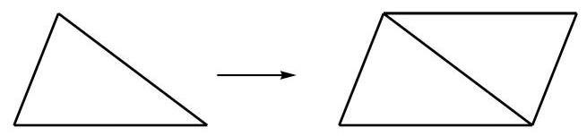
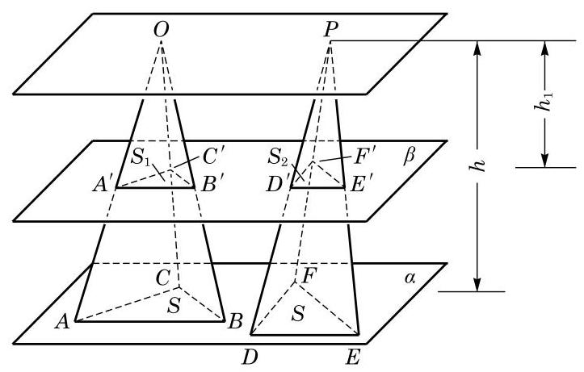
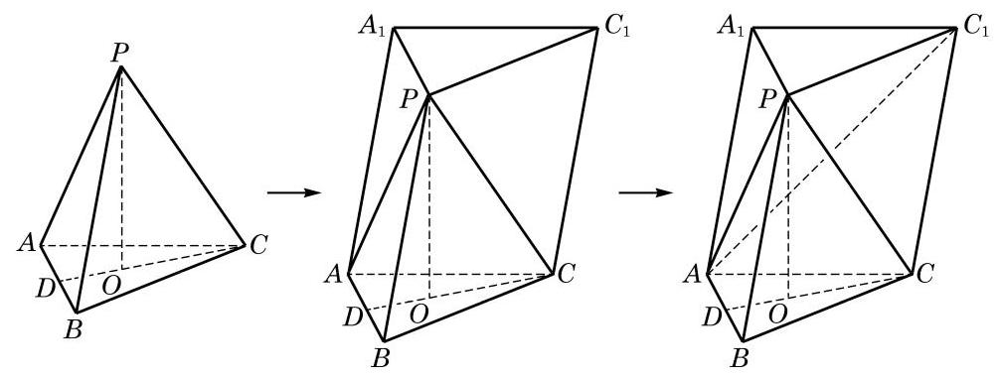
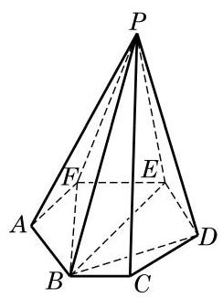
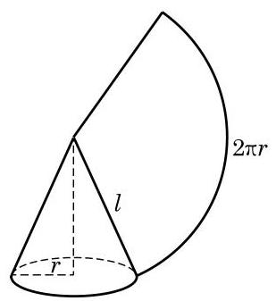

下面我们尝试由棱柱的体积公式推导棱锥的体积公式.
平面几何中, 在推导三角形的面积公式时, 可以先把两个全等的三角形拼成一个平行四边形, 如图 11-2-9, 然后利用已知的平行四边形的面积公式导出三角形的面积公式.

图 11-2-9
前面我们已经得到了柱体的体积公式, 能否类似平面几何的做法, 利用柱体的体积公式来推导锥体的体积公式呢? 要这样做, 显然应该从三棱锥开始, 因为任意一个棱锥都可以分割为若干个三棱锥.
作为准备, 我们先证明: 等底等高的三棱锥的体积相等.
已知三棱锥 和 的底面积都是 ,高都是 .
求证: 三棱锥 和 的体积相等.

图 11-2-10
证明 如图 11-2-10,把两个三棱锥的底面都放在平面 上,任意作平面 平行于 , 设平面 截三棱锥 所得的截面为 ,其面积为 ; 平面 截三棱锥 所得的截面为 ，其面积为 . 如果三棱锥的顶点 和 到平面 的距离为 ,那么推得 和 . 于是,得 ,相似比是 . 同理可得 ,相似比也是 . 由相似形的性质, 得
即
这说明用任意平行于底面的平面截两个等底的三棱锥时, 所得的截面面积相等, 所以由祖暅原理得三棱锥 和 的体积相等,即等底等高的三棱锥的体积相等.
下面我们来推导三棱锥的体积公式.
如图 11-2-11,设 是任一给定的三棱锥,其底面面积为 为高,且 . 过顶点 分别作 ,连接 ,显然 . 由棱柱的定义,可知 为三棱柱,其底面面积为 ,高为 . 下面需要研究的是三棱柱 与三棱锥 的体积之间的关系.

图 11-2-11
考察三棱柱的构造可以发现,比原三棱锥 多出的部分是一个四棱锥 . 连接 ,将这个四棱锥分割成两个等底同高的三棱锥 和 . 因此 . 另一方面,可将三棱锥 视作三棱锥 ,则它和原三棱锥 又是等底同高的三棱锥,于是 . 我们证明了三个三棱锥 与 都具有相同的体积, 于是

图 11-2-12
由此得 .
其中, 为棱锥的底面积, 为棱锥的高.
与柱体类似, 锥体的表面积也等于侧面积与底面积之和. 对于棱锥或圆锥来说, 由于底面是一个平面多边形或一个圆, 可以用平面几何的方法计算面积, 因此求侧面积是关键. 对于一般的棱锥来说, 每个侧面都是三角形, 其侧面积也易于求出, 但难以写出一个一般的公式. 对于圆锥来说, 求其侧面积则是一个新的问题, 下面我们只讨论正棱锥和圆锥的表面积.

图 11-2-13
对于圆锥, 我们可以采用求圆柱侧面积的方法, 将其沿一条母线剪开, 展开在一个平面内. 可以看到, 圆锥侧面的平面展开图是一个以圆锥母线 为半径的扇形,扇形的弧长就等于圆锥底面的圆周长,如图 11-2-13 所示. 设圆锥的底面圆半径为 ,则扇形的中心角 (弧度). 由扇形的面积公式,可得